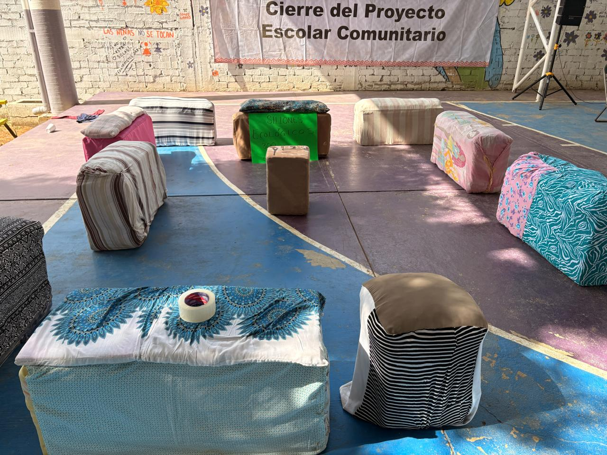
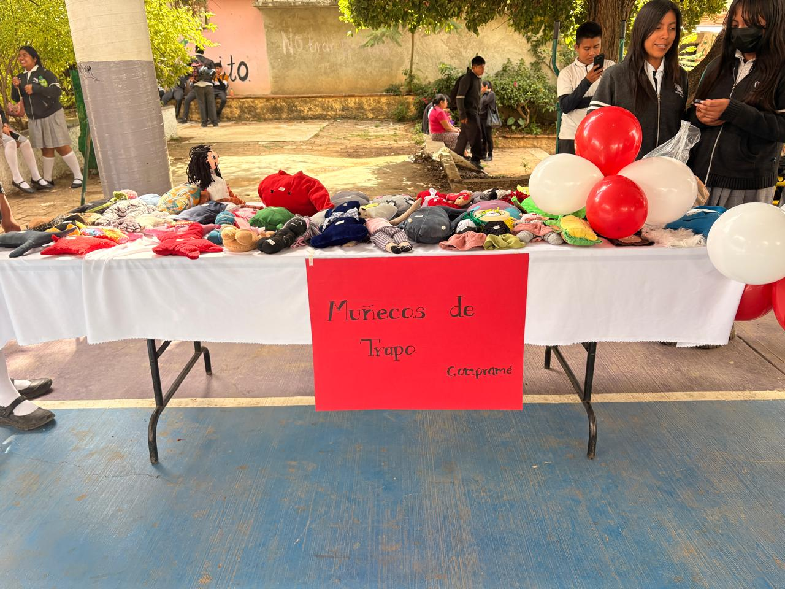
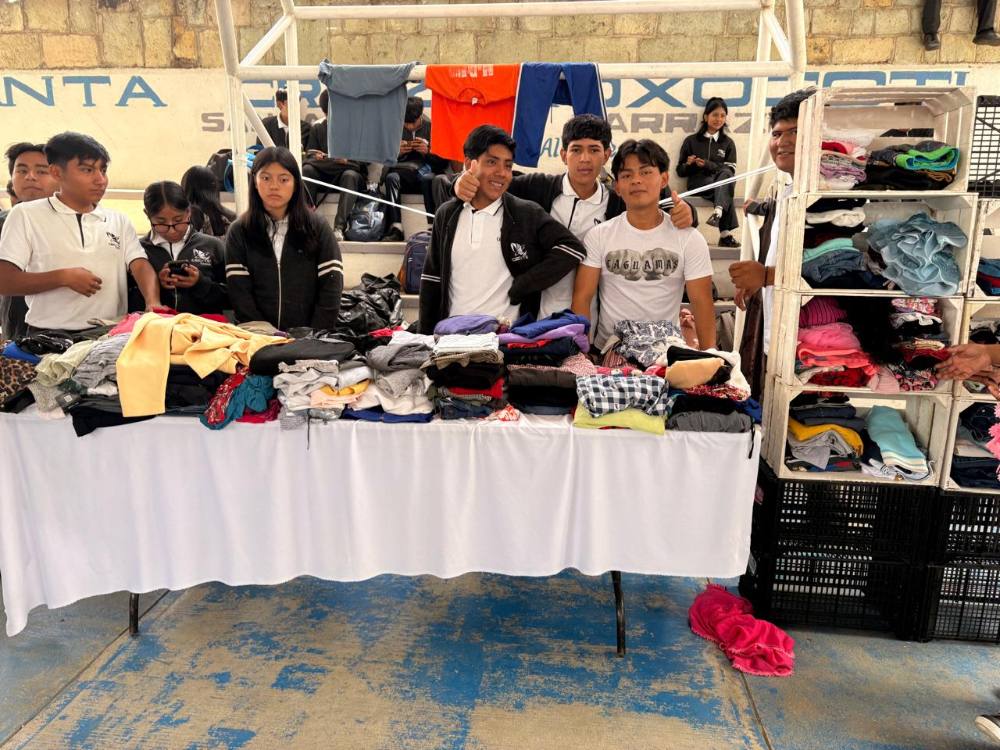
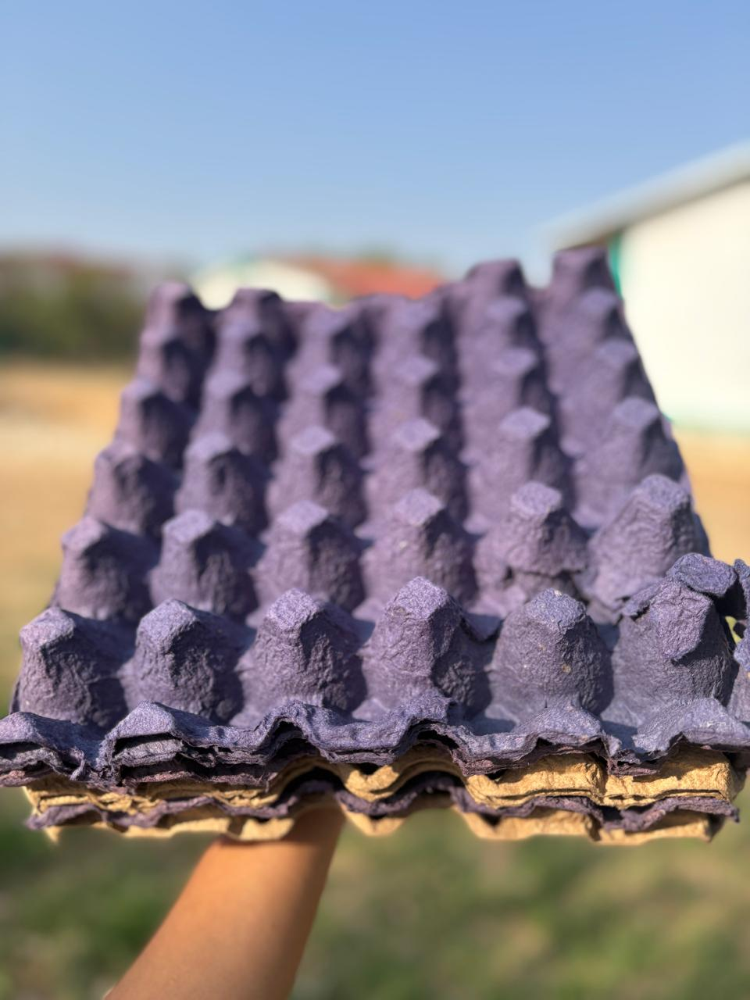

Lic. Irma Elvira Caballero García
Sillones con conos de huevo
Se recolectaron conos de huevo para construir sillones ecológicos y decorativos, demostrando que los materiales reciclados pueden tener una segunda vida útil.
Muñecos de trapo
Con ropa usada se elaboraron muñecos de trapo creativos que ayudaron a reducir residuos textiles y promover el reciclaje.



